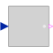
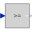

partialBooleanThresholdComparisonPartial block to compare the Real input u with a threshold and provide the result as 1 Boolean output signal |

|
Information
This information is part of the Modelica Standard Library maintained by the Modelica Association.
Block has one continuous Real input and one continuous Boolean output signal as well as a 3D icon (e.g., used in Blocks.Logical library).
Parameters (1)
| threshold |
Value: 0 Type: Real Description: Comparison with respect to threshold |
|---|
Connectors (2)
| u |
Type: RealInput Description: Connector of Real input signal |
|
|---|---|---|
| y |
Type: BooleanOutput Description: Connector of Boolean output signal |
Extended by (4)
|
Modelica.Blocks.Logical Output y is true, if input u is less or equal than threshold |
|
|
Modelica.Blocks.Logical Output y is true, if input u is less than threshold |
|
|  |
Modelica.Blocks.Logical Output y is true, if input u is greater or equal than threshold |
|
Modelica.Blocks.Logical Output y is true, if input u is greater than threshold |